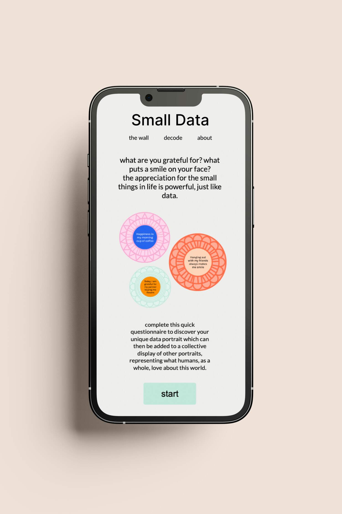

Exploring how data humanism and information design can create a sense of gratitude and connect people.
2023
Data DrivenExperimentalUX/UI
The Challenge
For this project, I was required to create a design solution or creative project that explored a passion within the field of media
design. Through research and experimentation, I was able to deepen my knowledge within UX/UI, allowing me to learn and grow as a
designer.
The Problem
Over the past decade, there has been a lot of change and uncertainty in the world, with COVID-19 being one of the most recent shifts
in our lives. This led to a rapid growth in technology and a sustained period of isolation for people, affecting mental health
hugely.
There is a lot of research that finding joy in life, no matter how small and through any intervention, can benefit your mental
health. Based on these insights, my research investigated how information design adopting the principles of data humanism can
positively address these bigger issues and how more meaningful and thoughtful representations of data can connect people.
The Process
There are many different approaches to gathering, analysing and presenting data that align with the data humanism ethos. This
study allowed me to explore these methods but in a way that is compassionate and personal, challenging notions of data being
something faceless and intimidating.
I spent time unpacking the ideas behind data humanism to best apply these ideologies to my experiments. As it is a human-centred
concept, I prioritised testing my experiments to develop my solution, with each experiment informing the next. Every step taken
extended my knowledge, shaped the idea and built a solid foundation for my final solution supported by research and user
feedback.
I spent time unpacking the ideas behind data humanism to best apply these ideologies to my experiments. As it is a human-centred
concept, I prioritised testing my experiments to develop my solution, with each experiment informing the next. Every step taken
extended my knowledge, shaped the idea and built a solid foundation for my final solution supported by research and user feedback.
The Outcome
The final solution explored how data portraits could capture more personal and qualitative data. I developed a bright and welcoming
interface featuring a questionnaire to collect information on what people are grateful for. Based on their answers, a unique data
portrait was generated.

Visual Design
The visual design of the interface was integral. Data humanism focuses on presenting data in a non-intimidating way. I considered
how I could create an enjoyable experience for the user. It is easy to use, and the minimalistic style is calming.
The colour palette is bright and warm to communicate a friendly tone of voice. I trialed many designs for the portrait and settled
for a circular shape that resembles a flower or sunburst. The different pattern rings look playful and come together to form a
unique symbol to that person.
Gratitude is very personal to each person - it is difficult to measure the qualitative nature with numbers and algorithms. This made
creating the code difficult. Using the p5.js library and JavaScript, based on the users survey answers, I generated a unique patterned
symbol that represented what that person was grateful for. The final data portraits bring people together and promote connectivity
through shared experiences.
Data humanism embraces the complexity of life, moves beyond standards and can uncover meaningful insights about our world. The series
of experiments, starting with participatory data installations and transitioning to a more digital experience, explored how data can be
a powerful tool to enhance well-being.